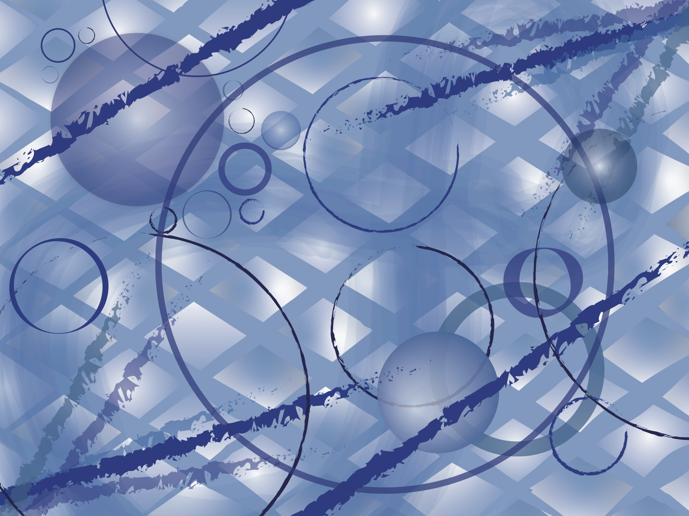

For this abstract representation of a song, I used color media of the CMY/RGB color wheel, digitally on Adobe Illustrator, on a 9in x 12in workspace. The song I chose is Endless Summer by Cascada. This song is played every night at my summer camp when the whole camp is gathered in a space that has a stage, called the Amphitheater. When the song is played, everyone is dancing under flashing lights. I want to focus on what this song reminds me of, rather than the actual lyrics/meaning of the song, to capture the complete mood of the song. I used a monochromatic color harmony of hues, tints, tones and shades of blue, since my camp color is blue (and called Blue Ridge) so that is how I wanted to incorporate the uniqueness of my own camp. To represent the strobe/disco lights, I used diagonal lines coming from corners to represent the beaming lights. Additionally, I incorporated a boxy pattern in the background to resemble the stage, and finally I made a circular pattern to resemble the number of people/heads. In the background I included a faint infinity loop to represent the title of the song Endless Summer. Ultimately, I created unity through repetition of shapes.
